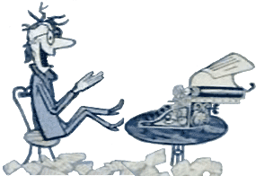

College Admission Essay
The “Make” or “Break” Essay.
The college admissions essay is the best tool that students
have to distinguish themselves from a sea of numerically interchangeable candidates.
An effective essay demonstrates
a mature and organized thought process while offering authentic insight into the uniqueness of a student’s experience.
Balancing one’s passions and curiosity with humble introspection is a challenging task for anyone, let alone an overstressed
college-bound senior. Having taught AP and Honors English, I understand the difficulties students face in selecting a
suitable tone and subject matter.
I work with students to brainstorm, draft, and polish admission essays that meet these demands and enable students to gain admission to their top-choice schools. At the end of this intensive process students feel proud of having crafted a personal statement that captures their real voice through vivid storytelling, reflection and selective self-disclosure.
I got a letter from Harvard inviting me to an exclusive on-campus interview with a note: they loved my essay.
more testimonialsZack
Portland, OR
- Online Writing Support
- Academic Coaching
- College Admission Essay
- Resumes and CVs
- Persuasive Writing
- Creative Content
- Copyediting